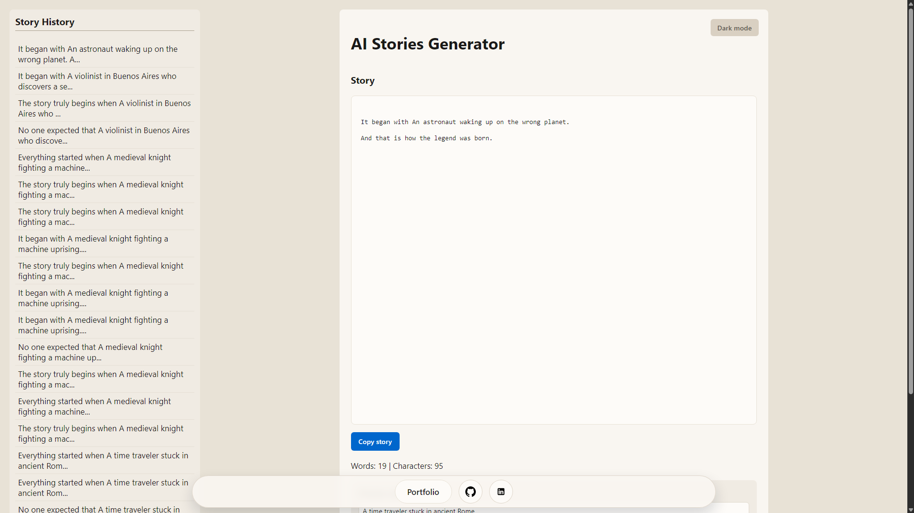

AI Story Generator
Problem: Generate coherent short stories from minimal user input without breaking when API credits run out.
Stack: Vercel Serverless Functions, Replicate API (Llama 3), Vanilla JavaScript, Playwright, GitHub Actions.
Outcome: Production-minded AI feature with explicit API contracts, resilient client HTTP, and deterministic fallbacks.
- AI API — Serverless Replicate integration with tone/length controls and explicit HTTP contracts (402 when credits fail).
- HTTP resilience — fetchWithResilience: AbortController timeout, retry on 429/502/503, typed HttpError.
- Fallback — Deterministic local story generator plus transparent session notice when AI is unavailable.
- CI + E2E — GitHub Actions (syntax, API/fallback tests) and Playwright generate flow with mocked API.
Impact: Users always get a story—even when API credits run out or the provider returns transient errors.
Engineering decisions on the card—AI contracts, client resilience, fallbacks, and CI—not just a demo that works on a good day.